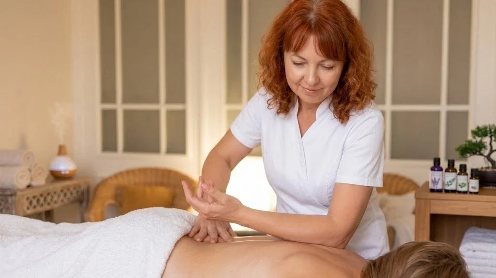

Body massage · Prague 4
Body Massage in Prague — Full Body
The classic you cannot go wrong with. An hour in which I work through the back, legs, arms and neck, and not one spot is forgotten.
What full-body massage is
Full-body massage is a classic technique that works through every major muscle group within a single hour — back, neck, legs and arms. Unlike targeted massages it does not address one particular painful spot; it brings the whole body back into balance at once.
I use medium to deeper pressure, adjusted to whatever I find under my hands. Some places only need warming and circulation, others need me to stay longer. That is exactly why it pays to say at the start what is troubling you most.
How the massage works
- A short consultation We agree what is troubling you and whether to add somewhere or skip somewhere.
- Back and neck I start at the back, where tension is usually greatest. It takes roughly half the time.
- Legs and glutes I continue to the back and front of the legs. Important for athletes and for standing work.
- Arms and closing I finish with the arms and calming strokes across the whole body.
What full-body massage does
- releases muscular tension throughout the body
- better circulation and faster recovery
- relieves pain in the back, shoulders and legs
- greater joint mobility and better posture
- washes away fatigue after sport or a long day
- calms you and markedly improves sleep
Who it suits
Full-body massage is ideal if several places hurt at once, you are coming out of a demanding period, or you simply want complete recovery. It is sought out by athletes, people in desk jobs and anyone who spends long hours standing.
When we do not massage
- fever, acute inflammation or infectious illness
- thrombosis and vein inflammation
- fresh injury, fractures or open wounds
- acute disc herniation
- cancer under active treatment
Not sure? Call me before booking on +420 721 761 411 and we will talk it through.
Price of full-body massage
Frequently asked questions
How much does a full-body massage cost?
A classic full-body massage is 1,300 CZK for 60 minutes. A shorter targeted back and neck massage is 700 CZK for 30 minutes.
What does a full-body massage include?
Within the hour I work the back, neck, the back and front of the legs, and the arms. The face and abdomen are not included — we have separate treatments for those.
Is an hour really enough for the whole body?
Yes, with good judgement. Roughly half the time goes to the back and neck, the rest to legs and arms. If you want one area worked more, say so at the start.
How often should I come?
To keep the muscles in good shape, once every three to four weeks is enough. With pain or intense training, weekly is fine.
Should I eat before a massage?
Do not come completely on an empty stomach, nor straight after a large meal. A light meal about an hour and a half beforehand is ideal.
Book your full-body massage
The studio is in Prague 4 — Nusle, a short walk from Pankrác and Vyšehrad. Booking online takes a minute.